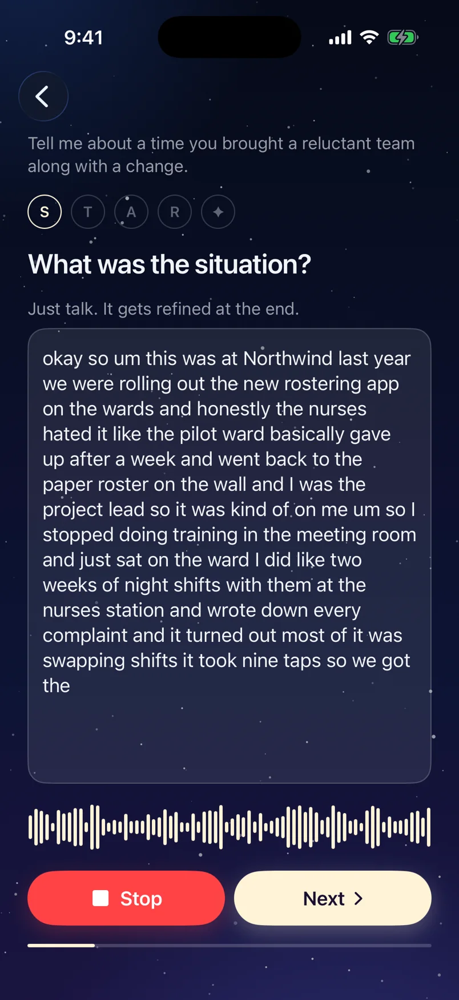
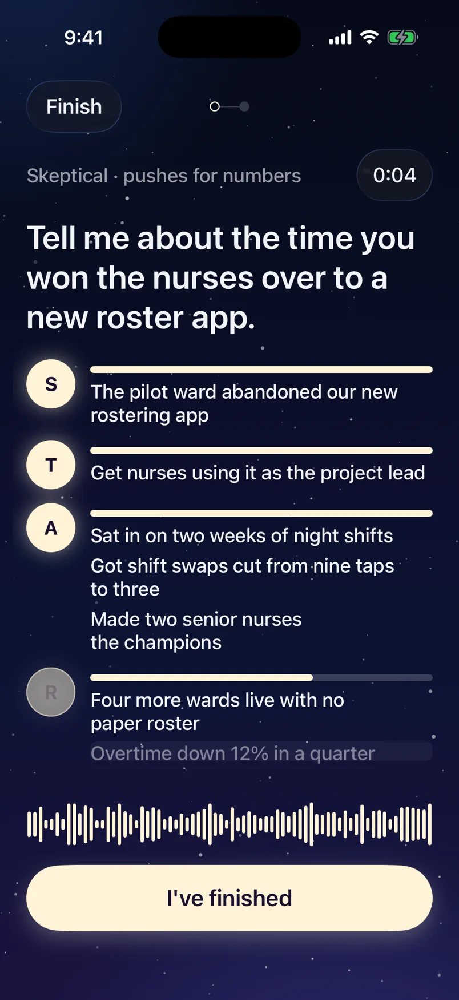

Staries is a work journal for your best stories. Write one down the week it happens, practise telling it, and walk into the interview or review with the right one ready.
No subscription. We never see your stories.

Just talkAnswer out loud, ums and all. Staries tidies it into short points and asks what would make it stronger.Watch your sky fill inEach story becomes a star in the skill it shows. The ones you practise shine brighter.

Nail it on the dayTell a story out loud and watch each part light up. Quick rounds teach you which story answers which question.